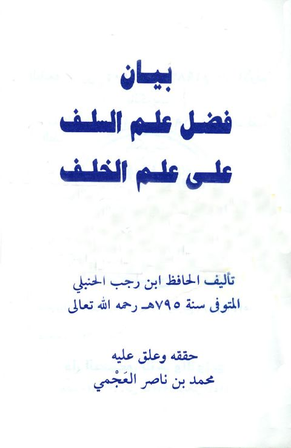
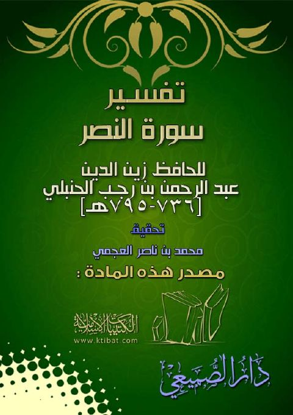
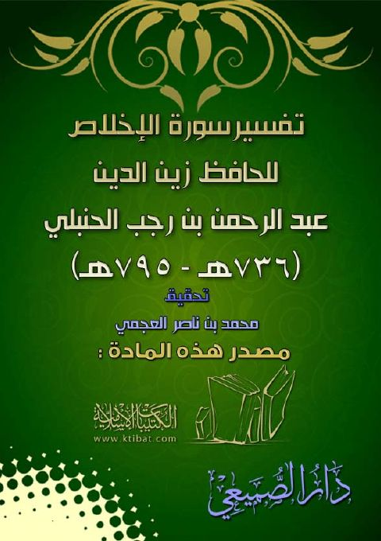
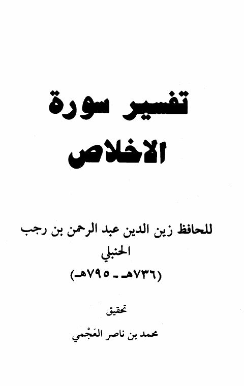

بيان فضل علم السلف على علم الخلف بيان فضل علم السلف على علم الخلف بن رجب الحنبلي
تفسير سورة النصر- ت العجمي تفسير سورة النصر- ت العجمي عبد الرحمن بن أحمد بن رجب الحنبلي
تفسير سورة الإخلاص- ملون تفسير سورة الإخلاص- ملون عبد الرحمن بن أحمد بن رجب الحنبلي
تفسير سورة الإخلاص- ت. العجمي تفسير سورة الإخلاص- ت. العجمي عبد الرحمن بن أحمد بن رجب الحنبلي